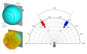
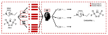

Communications and Data Science Engineer
Hi, I'm Mariam Abdullah. My work focuses on machine learning, signal processing, and experimental high-frequency communication systems. Explore my research and industry projects and the methods behind them.
Industry projects
A collection of industry-focused projects, encompassing applied machine learning, data analytics, and the development of practical, data-driven solutions to real-world challenges.

Research projects
A collection of research and applied engineering projects, encompasing machine learning, signal processing, and terahertz wireless communications.

Automatic Modulation Recognition
Adaptively identifying modulation formats from received signals in coherent and non-coherent communication systems.
Explore project ↗
Nonlinearity Compensation
Investigating how to mitigate strong nonlinear distortion in terahertz communication links.
Explore project ↗
Direction-of-Arrival Estimation
Exploring estimation of signal arrival direction using frequency-dependent antenna responses.
Explore project ↗
ML-Based Ionic Liquid Property Prediction
Estimating the chemichal properties of ionic liquids using graph convolutional networks.
Explore project ↗About
I am a PhD candidate in Electrical Engineering and work at Adelaide University, where I specialise in machine learning, signal processing, and high-frequency communication systems. My research combines computational modelling, data-driven algorithms, and experimental validation to develop and evaluate solutions to complex engineering problems.
Areas of interest
Deep learning · Semi-supervised learning · Signal processing · Nonlinear equalisation · Experimental validation · Python · MATLAB